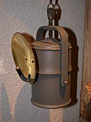

Carbide Lamps
|  |
| Image: a classic cavers carbide lamp from the 1930s. |
A carbide lamp is a classic cavers and miners lamp. It was invented in the 19th century and is used until today.
In modern mining and in several caving areas carbide lamps are replaced by electric torches, typically helmet mounted lamps with big rechargeable batteries. But even today, a carbide lamp has a much brighter, more constant light, lasts longer than electric lamps, and is also more lightweight. But electric lamps are a bit cheaper, cost less work for maintenance and have no open light, important reasons to use them instead in mines and in fragile cave environments.
Carbide lamps were the first good caving lamps, as they produced no grime, were rather easy to handle and lasted long enough even for long tours. Carbide was easy to carry and very efficient. And the lamp was very common at the turn for the 19th to the 20th century, they were used for many purposes like bicycle lamps, carriage lamp, and even the first automobiles had this kind of lamps.
Carbide lamps are burning a gas and have a flame about the size of a candle flame. If the pressure of the gas is not too high, the flame burns nearly without grime and light is a little yellowish and warm. The lamp has a reflector, a shallow, concave tin, which is polished to reflect the light into one direction. As it is shallow, the lamp lights an rather wide angle in front of the reflector. As there is no glow wire, as in an electric bulb, there are no light rings and dark central spots as we know it from electric torches.
Carbide (aka Calcium Carbide CaC 2 ) is limestone, which is chemically alterated by burning it with coke in a specific process. When water is added an exothermic reaction starts, which produces limestone (at last) and acetylene gas. Acetylene gas has very low buoyancy and burns very hot. It burns nearly as hot as hydrogen, and is thus used for welding. The central reaction is the following one, which happens immediately when water and carbide get in touch:
CaC 2 + H 2 O => C 2 H 2 + CaO + heat
The principle of the lamp is very simple. The lamp has two chambers, the upper one is filled with water, the lower one is filled with carbide. A valve allows to direct little amounts of water, drop by drop from the upper into the lower chamber. This lower champer is pressure resistant and air proof, so the carbide reaction produces acetylene and a certain pressure. The acetylene now flows out the only possible way, through a burner.
The lamp is started by opening the water valve, and when the pressure is there, the valve is closed nearly completely. The brightness of the light is reguated by opening the valve a little bit, but the result of the change can only be seen after several minutes. To turn off the light, the valve is closed completely and then the flame gets smaller and smaller until it goes out.
- See also
 The Carbide Caver,
a whole website dedicated to the carbide lamp, there you'll find anything we e could not explain.
The Carbide Caver,
a whole website dedicated to the carbide lamp, there you'll find anything we e could not explain.- The Carbide Lamp Page
- Carbide Lamp
- The Carbide Lamp,
nice explanantion with a cross section.
- The Carbide Lamp,
another explanantion with a cross section.
- J. K. Dey & Sons,
a carbide lamp producer in India.
One of the last worldwide....